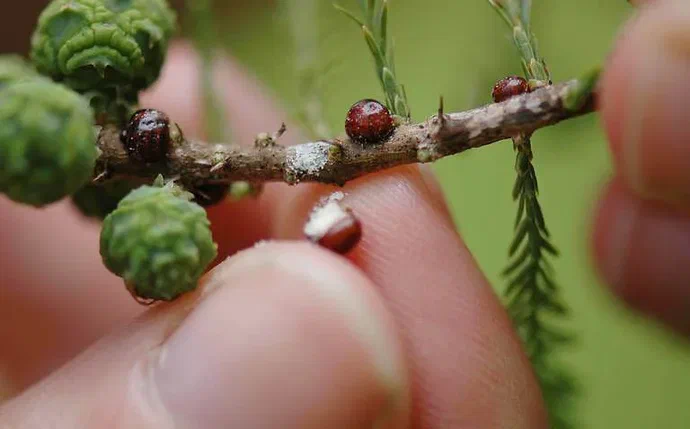
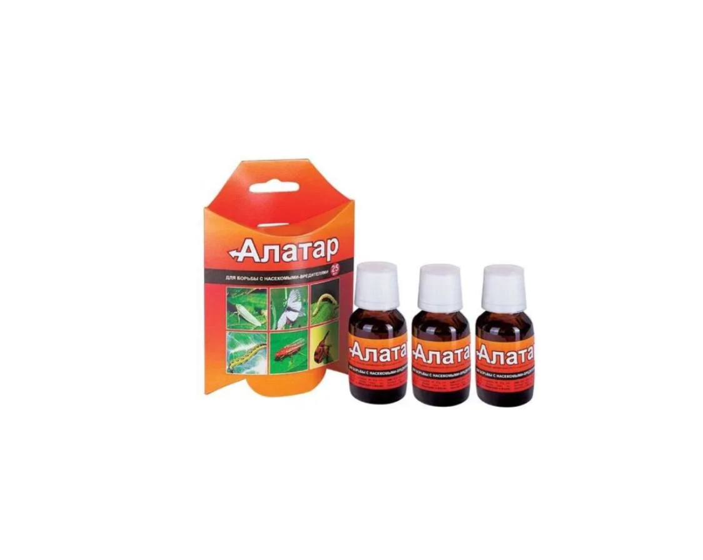

Ложнощитовка
Как распознать: взрослая самка имеет довольно характерный вид: тело сильно выпуклое, почти шаровидное, размером примерно 3–3,5 мм. Окрас варьируется от желтовато-коричневого до тёмно-коричневого или каштанового. Сверху она покрыта круглым, гладким и блестящим хитиновым куполом.
.webp)
Другие признаки поражения:
- На ветках появляются крупные жёлтые или желтовато-коричневые выпуклые шарики.
- На хвое и ветвях образуется обильная липкая медвяная роса.
- На этой липкой субстанции со временем развивается сажистый грибок — появляется густой чёрный налёт.
- Хвоя тускнеет, желтеет, может преждевременно опадать. При сильном поражении отдельные ветви усыхают.
- Если аккуратно раздавить живую самку, она выделит жидкость.

Важное отличие от настоящей щитовки: у ложнощитовки выпуклое тело (полусфера), а у щитовки — более плоский круглый диск с выпуклым центром. К тому же ложнощитовка заметно крупнее.
Какой вред наносит: ложнощитовка — сосущий вредитель. Она прикрепляется к побегам, хвое или коре и высасывает из растения питательные соки. Это нарушает обменные процессы: туя хуже растёт, хвоя теряет цвет, отдельные ветви усыхают, а при масштабном поражении растение может погибнуть. Кроме того, липкие выделения создают благоприятную среду для сажистых грибков, которые дополнительно ухудшают внешний вид и физиологию растения.
Особенность размножения: у туевой ложнощитовки партеногенетическое размножение — самки откладывают яйца без участия самцов. За год развивается одно поколение: взрослые самки появляются весной (апрель–май), откладывают 500–600 яиц, из них в конце июня — начале июля выходят подвижные личинки-бродяжки. Они расселяются по растению, а осенью перемещаются на однолетние побеги и зимуют.
Как бороться:
- Внимательно осматривайте растения. Регулярно проверяйте туи, особенно в период активности вредителя (апрель–июнь, время отрождения личинок). Именно в фазу выхода личинок обработки инсектицидами дают максимальный эффект.
- Используйте системные инсектициды. Поскольку вредитель защищён куполом, нужны препараты, которые проникают в ткани растения и действуют контактно-кишечно. Подойдут, например, «Актара», «Конфидор», «Калипсо». Обработку проводите по инструкции, при необходимости повторите.
- Чередуйте препараты. При регулярных обработках одним и тем же средством у вредителя может развиться устойчивость. Поэтому меняйте препараты с разным действующим веществом (например, в один сезон неоникотиноиды, в следующий — фосфорорганические соединения).
- Проводите механическую очистку. Аккуратно удаляйте сильно поражённые ветви — это снизит общую нагрузку.
- Соблюдайте агротехнику. Здоровое, правильно ухоженное растение устойчивее к вредителям. Следите за поливом, не допускайте загущения кроны, обеспечьте хорошую циркуляцию воздуха.
Препарат «Алатар»: ссылка на препарат на Озоне.

Нажмите на фото — откроется страница препарата на Озоне
При обработке используйте прилипатель «Липосам» — он помогает препарату удерживаться на хвое и ветвях и не смываться дождём.

Нажмите на фото — откроется страница препарата на Озоне